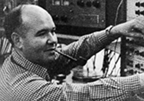
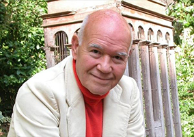

|
|
 |
Alfredo del Mónaco
|
|
(por Carolina
Rodríguez)
 
Caracas, 29-04-1938 -- 27-06-2015
La obra de Alfredo Del Mónaco ha alcanzado
desde sus inicios gran reconocimiento nacional e
internacional. Pionero de la música vanguardista
y promotor de la música electroacústica en
Venezuela, fue tambien el primer compositor
venezolano que obtuvo un doctorado en Estados
Unidos. Del Mónaco ha trascendido como uno de
los compositores venezolanos más importantes de
la actualidad. Sus obras han sido ejecutadas en
festivales internacionales y en conciertos de
distinguidas agrupaciones del mundo.
1958-1968: realiza estudios musicales.
1961: se gradúa en Derecho de la Universidad
Católica Andrés Bello. Presenta el primer
concierto de música electroacústica por la Radio
Nacional.
1967: compone sus primeras obras
electroacústicas Cromofonías I y Estudio
electrónico, en el estudio de fonología del
INCIBA.
1968: obtiene el Premio Nacional de Música, en
el género vocal, con La noche de las alegorías.
Es la primera obra no nacionalista que obtiene
este galardón.
1969: es cofundador de la sección venezolana de
la Sociedad Internacional de Música
Contemporánea (SIMC) y se establece en Nueva
York.
1972: dicta una conferencia sobre sus obras en
la Universidad del estado de Nueva York en
Buffalo.
1972-1974: dicta un curso de Música
Electroacústica en la Universidad de Columbia.
1974: obtiene el doctorado en música por la
Universidad de Columbia.
1976: permanece en Berlín nueve meses.
1977-1980: dicta un curso sobre Música
Contemporánea en el Conservatorio Nacional de
Música Juan José Landaeta, y en la Orquesta
Nacional Juvenil, invitado por la Unesco.
1982-1988: dicta un curso en la Universidad de
Puerto Rico.
1987: dicta un curso sobre Música Contemporánea
en la Asociación Humboldt de Caracas.
1989: dicta un curso sobre compositores
venezolanos del siglo XX en la Universidad de
Chile.
1999: es Miembro Fundador y de Número del
Colegio de Compositores de Iberoamérica
(México).
|
|
|
Producción
|
Premios:
Premio Nacional de Música, género vocal, por La
Noche de las Alegorías,1968.
Premio Nacional de Música de Venezuela, 1999.
Lista de obras:
Orquesta:
Dos fugas académicas para Orquesta de Cuerdas,
1964, estreno: Orquesta Sinfónica Venezuela, 1965;
Cromofonías II, 1968; Tupac-Amarú, 1977, encargo
del I Festival Latinoamericano de Música
Contemporánea Ciudad de Maracaibo, 1977; estreno:
Orquesta Sinfónica de Maracaibo, 1977, ed.
Caracas: Instituto Latinoamericano de
Investigaciones y Estudios Musicales Vicente
Emilio Sojo, 1987; Tientos de la noche imaginada,
guitarra y orquesta, 1990, encargada por el
Consejo Nacional de la Cultura, estreno: Orquesta
Sinfónica Simón Bolívar, 1991; Cantos de la noche
alta, voz femenina y orquesta, encargo de la
Fundación Vicente Emilio Sojo, 1992.
Música de
cámara:
Sonata para Dos Violines, Viola y Cello, 1965,
estreno: 1988 en el Ateneo de Caracas, ed.:
Universidad Central de Venezuela, 1968;
Solentiname, 1972-73, encargo The Philadelphia
Composer's Forum, estreno: 1974 en el IV Festival
Interamericano de Música de Washington, ed.
Caracas: Fundación Vicente Emilio Sojo, 1989;
Encuentros del eco, 2 pianos, percusionistas,
1976, encargo del Grupo Contemporáneo de Caracas,
1976, ed. Caracas: Fundación Vicente Emilio Sojo,
1979.
Mùsica vocal:
La noche de las alegorías (Fonograma para ocho
voces solas), 1968, Premio Nacional de Música,
1968; Cuarteto II,4 voces lectoras, 1978; Visiones
del Caminante, dos guitarras, Encargo del Proyecto
Cultural Mavesa, 1995.
Solista: Syntagma B, trombón de vara, encargo de
James Fulkerson, estreno: 1972 en el Mercer Arts
Center, N.Y., 1972; Chants, flauta, 1988, estreno:
Luis Julio Toro en la Asociación Cultural
Humboldt, Caracas, 1988; Tientos del véspero,
balada, guitarra, 1991, ed. Caracas: Fundación
Vicente Emilio Sojo, 1992; Tlalolc, miniatura para
piano, encargo de la Comisión del V Centenario,
1991; Lyrika, oboe con extensiones
electroacústicas, 1992.
Electroacústica:
Cromofonías I, 1966-67, estreno: Festival
Internacional de Música de Mérida, 1968, Estudio
Electrónico I, para sinusoides, 1968, estreno: III
Festival de Música de las Américas y España,
Madrid, 1970; Tres ambientes coreográficos para
Sonia Sanoja(Ambiente sonoroI, Ambiente sonoro II,
Metagrama), 1970, estreno: Presentación de Sonia
Sanoja, 1970; Trópicos-música testimonial-, banda
magnética sobre sonidos y testimonios de la
realidad venezolana, 1972; Synus 17/251271, para
computadoras IBM 360, 1972; Estudio
electrónico III, banda magnética, partituras y
análisis, tesis de grado, 1974.
Electroacústica
con instrumentos:
Alternancias, vl., vla., vch., pn., sonidos
electrónicos, 1971.
Música
conceptual:
Cuarteto II, para voces, 1978, estreno: 1978 en el
Instituto de Fonología de Caracas; Cronoformantes.
Formas del Tiempo, para galerías de artes
visuales, 1978.
Discografía:
Alternancias, Cuarteto Galzio, Caracas: Fundación
Mito Juan Pro Música, 1971; Estudio electrónico II
y Metagrama.Nueva York: Disco CRI, 1970;
Tupac-Amarú. Caracas: Supra-Vox, C 5040, 1977.
Fuente:
Enciclopedia de la Música en Venezuela, t.II, pp.
499-500
Materiales cedidos por el compositor.
|
|
|